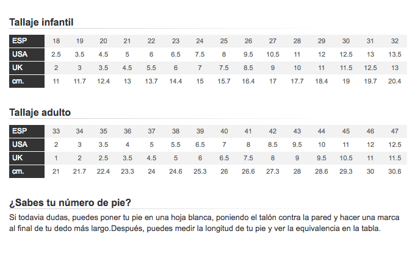

Elegir bien tus zapatos, no es solo cuestión de estilo, ¡se trata también de conocer bien la talla!
Demasiado grande, un poco estrecho, algo justo...cuando la talla nos trae de cabeza, no es fácil sentise cómodo en tus nuevas deportivas. Descubre aquí la tabla de equivalencias que te permitirá de comparar las tallas españolas, US y UK, nuestros consejos para tomar medidas así como un pedímetro super útil.
